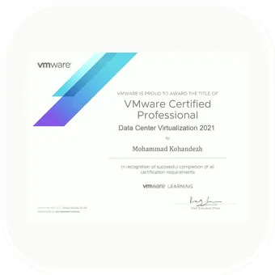
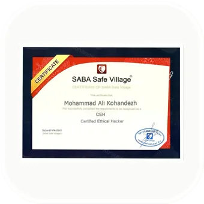
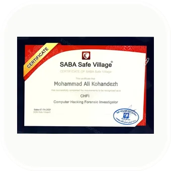
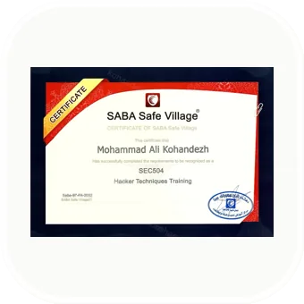
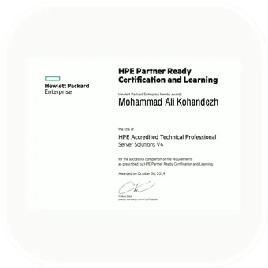
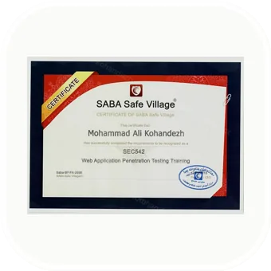

Source before shorthand — issuer names, titles and dates follow the certificate artifact or LinkedIn record. Curated portfolio record, not a live verification service.






01
Documented artifacts
Certificate-backed records
Forty-three unique certificate images, reconciled against the archive, normalized to one canvas size and ordered newest to oldest by earned or issued date. Select any image to inspect the full-size record.
Sixteen unique appreciation letters, satisfaction records and awards, ordered newest to oldest. One satisfaction letter uses the service date referenced in its text. All PDF pages are preserved as equal-size images.
Tehran Chamber of Commerce — Backup Exec Implementation
Issuer
TCCIM
Dated
Service appreciation
Qazvin Power Distribution — Tape Backup Services
Issuer
Qazvin Power Distribution
Dated
Training satisfaction
Tehran Chamber of Commerce — Symantec Backup Training
Issuer
TCCIM
Referenced date
03
Governance & industry roles
Commission & Committee Appointment Decrees
Four official appointment letters naming Mohammad Ali Kohandezh to specialized industry commissions and committee leadership, ordered newest to oldest.
Commission membership
Member, AI & Data Science Commission
Issuer
Computer Trade Organization, Tehran
Dated
Commission membership
Member, Internet of Things Commission
Issuer
Computer Trade Organization, Tehran
Dated
Commission membership
Member, Network Commission
Issuer
Computer Trade Organization, Tehran
Dated
Committee chair appointment
Chair, Cybersecurity Committee
Issuer
NGO for Promoting IoT & Data Science
Dated
04
LinkedIn record
Matched public credentials
Ten records currently visible on the public LinkedIn profile, reconciled with the local certificate archive and ordered by earned date.
01
VCS-325: Administration of Veritas Backup Exec 20.1
Veritas · LinkedIn + artifact matched · ID COMP610000050363
02
MCSE: Cloud Platform and Infrastructure — Certified 2016
Microsoft · LinkedIn + artifact matched · ID 11194939
03
Cambridge English Entry Level Certificate in ESOL International
University of Cambridge · LinkedIn + archive matched · ID 0049017186
04
MCTS: Windows 7, Configuration
Microsoft · LinkedIn + artifact matched · ID 11194939
05
MCSE: Desktop Infrastructure
Microsoft · LinkedIn + artifact matched · ID 11194939
06
MCSE: Server Infrastructure
Microsoft · LinkedIn + artifact matched · ID 11194939
07
MCSA: Windows Server 2012 — Certified 2016
Microsoft · LinkedIn + artifact matched · ID 11194939
08
MCPS: Microsoft Certified Professional
Microsoft · LinkedIn shows Aug 2014; artifact shows Sep 18, 2014 · ID 11194939
09
VTRAK Level 1 Certification Program
PROMISE Technology · LinkedIn + artifact matched
10
Symantec Backup Exec 2012 Administrator
Symantec · LinkedIn + artifact matched · ID COMP610000050363
This page is a curated professional record, not an issuer-operated verification portal. Certificate artifact means the full image is retained locally; LinkedIn + artifact matched means the title and issuer also appear in the current public LinkedIn record.
Multiple PDFs or JPGs for the same issuer, title and achievement are represented by one card. Exact days come from the certificate artifact; appreciation records without a visible document date are labeled rather than guessed. The one MCPS month mismatch is shown explicitly, and the 2011 MCTS artifact remains separate from the September 2014 MCTS credential.